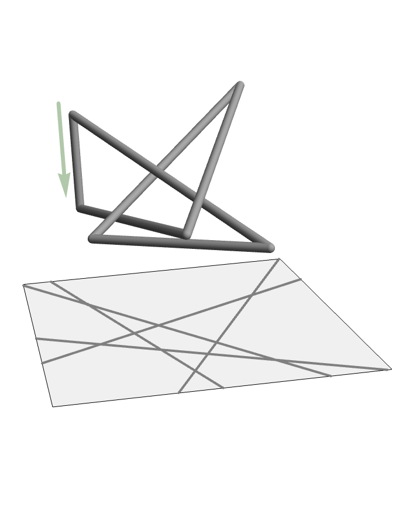

I think of myself as an applied mathematician, but like to borrow tools from pure mathematics to learn more about the world. I currently work with Dr. Clayton Shonkwiler learning about "stick knots" which can be used as models of ring polymers. In the past I used sheaf laplicans as a tool for analyzing dynamical systems, in particular to model flocking as well as contributed to work analyzing synthetic aperature radar (SAR). In my masters thesis I analyzed 3D fractals using persistent homology.
